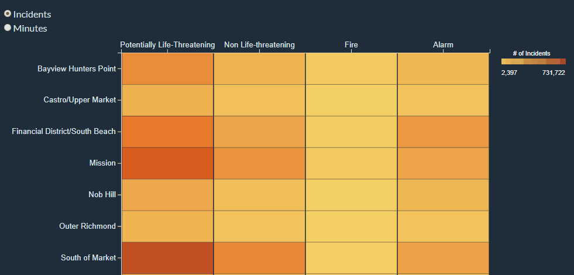

Visualizations
Neighborhooods vs. call type group heatmap
Heatmap represents Neighborhooods vs. Call Type Group.
Color shows sum of number of incidents by each call type group. Response time by minutes and number of incidents are shown on tooltips.
The Call Type Group filter keeps all not null values. The Neighborhooods filter keeps 10 of 42 members sorted by alphabet.
Data acquired from "Fire Department Calls for Service" from https://data.sfgov.org/.
Elizaveta Ozerova
Data Encoding
This data represents points from 2015 onward. The heatmap shows top 10 neighborhood values. All null values were removed. The data was downloaded from Tableau prototype implementation and can be found here.
Instructions
The heatmap includes two numerical data points that should be known precisely (percentage and number of alarms). The interactivity allows us to show the number of incidents and the response time in minutes for each cell. Interactivity example:
Analysis
One or two findings that can be learned from your visualization(s) and how that supports the theme of the group project.
Inspirations
Thanks Sophie Engle for code examples. Heatmap interactive code example Basic heatmap code example Basic heatmap code example 2 Continuous Legend How to create a continuous colour range legend using D3 and d3fc Interactivity examples
Peer Feedback
| Suggestions | Improvements |
|---|---|
| Hide the exact percentage though, and only show it in interactivity. | Showed minutes and # of incidents with "details on demand". |
| It also threw me off what the encoding at 0% and 100% meant. | Changed to show minutes, not percents. |
| Data-ink ratio very high. | Reduced by showing more with interactivity. |
| Changing orientation may help to show more data better. | Orientation was changed, x and y switched. |
| Sorting. | Neighborhooods were sorted by alphabet. |
Response process time for each call type barchart
Barchart average of response process time for each Call Type broken down by Call Type Group.
Color shows sum of number of incidents by each call type. The Call Type Group filter keeps all not null values.
The number of incidents is filtered by ranges from 1,500 to 731,722.
Data acquired from "Fire Department Calls for Service" from https://data.sfgov.org/.
Elizaveta Ozerova
Data Encoding
This data represents points from 2015 onward. The bar chart shows values where the amount of alarms is bigger than 1500. All null values were removed. The data was downloaded from Tableau prototype implementation and can be found here.
Instructions
The interactivity for the bar chart allows us to draw a line for each bar to compare different events and see response time in minutes for each bar. Interactivity example:
Analysis
One or two findings that can be learned from your visualization(s) and how that supports the theme of the group project.
Inspirations
Thanks Sophie Engle for code examples. Simple d3.js bar chart Simple bar graph in v4 Building Interactive Bar Charts with JavaScript Continuous Legend How to create a continuous colour range legend using D3 and d3fc Interactivity examples
Peer Feedback
Haven't had any suggestions in peer feedback for bar chart prototype.